-
Who Am I?
Hi, I'm Kartik Derasari
I'm currently pursuing my Bachelor of Engineering in Computer and Meanwhile, I have been contributing towards various programs and communities namely Google AI | Explore ML, Google Code-In - TensorFlow, Microsoft Student Partner, Google Developers Group Ahmedabad, Google Developers Group Cloud Ahmedabad, Developer Circles from Facebook and International Institute of Electrical and Electronics Engineers. I've been recognized for winning Hackathons, contributions towards the Community, and Project Mentoring. Having a good grasp over Python and Artificial Intelligence, I have inculcated Machine Learning knowledge to more than 1500 students and professionals. I always try to innovate using Internet of Things and the power of AI.Cups of coffeeTalks & WorkshopsLines of CodeLeadership & Volunteering Experience
Event Organizer - Google Developers Group Cloud Ahmedabad
Tech Lead - Arkeytec January 2020 - Present
Google AI's Explore Machine Learning Facilitator July 2019 - Present
Kartik Derasari is very dedicated towards the communities and has excelled in facilitating around 1200+ students during his 12+ sessions on Beginner and Intermediate track at more than 5 Universities and community events over the state. He endeavours to inculcate Machine Learning knowledge by demonstrating the peers with real life examples. He has collaborated with other Explore ML Facilitators and he has also received fantastic response and feedback from the community. He has also been recognized as one of the Top contributors of this Program and has also been featured in Google AI|Explore ML Wall of Fame.
Google Code In Mentor - TensorFlow November 2019 - Present
Being one of the mentor of TensorFlow in Google's Global online competition for 13 to 17-year-old Pre-University students, I'll be facilitating and mentoring them to contribute towards Open Source.
Developer Circles from Facebook Campus Organizer October 2019 - Present
Microsoft Student Partner September 2019 - Present
IEEE SOCET SB - Web Master 2017-2018
IEEE Collabratec Lead Ambassador 2017-2018
HackerEarth Campus Ambassador 2017-2018
Education
I'm pursuing my Bachelors of Engineering in Computer from Silver Oak College of Engineering and Technology, Ahmedabad.
Navkar Public School, Ahmedabad
2015-2017Nirman High School
2014-2015Community Work & Accomplishments
Google Code In TensorFlow Mentor 2017-2018
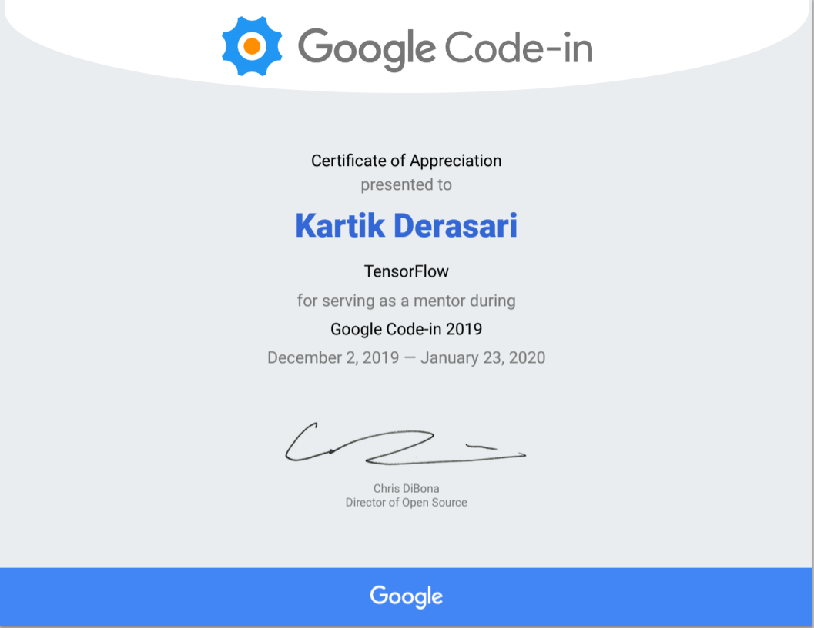Google Code-in is an annual programming competition hosted by Google LLC that allows preuniversity students to complete tasks specified by various, partnering open source organizations. This contest is to introduce pre-university students (ages 13-17) to open source software development. Since 2010, over 8100 students from 107 countries have completed work in the contest. Kartik was invited by TensorFlow’s Product Manager at Google to mentor the students participating in TensorFlow organisation in Google Code In. He mentored a lot of students through their online submissions and guided them accordingly. He will also receive the perks from Google.
Intel Edge AI Scholarship 2017-2018

Kartik Derasari, being a part of Intel Community, he was showcased with a Scholarship Opportunity of Udacity which was sponsored by Intel AI and he applied for the same. Looking at his Technical skills and his vision to the community, He was able to grab the opportunity and was awarded with Intel AI Edge Scholarship. This Scholarship was offered to all those Enthusiastic Students who were interested in Artificial Intelligence and making impactful projects for the community.
Udacity Facebook Private and Secure AI Scholarship Recipient 2017-2018

Kartik Derasari, being a part of Developer Circles from Facebook - Ahmedabad Community was showcased with a Scholarship Opportunity of Udacity which was sponsored by Facebook AI and he applied for the same. Looking at his Technical skills and his vision to the community, He was able to grab the opportunity and was awarded with Udacity Facebook Private and Secure AI Scholarship. This Scholarship was offered to all those Enthusiastic Students who were interested in Artificial Intelligence and making impactful projects for the community.
IEEE Collabratec Global Lead Ambassador 2017-2018
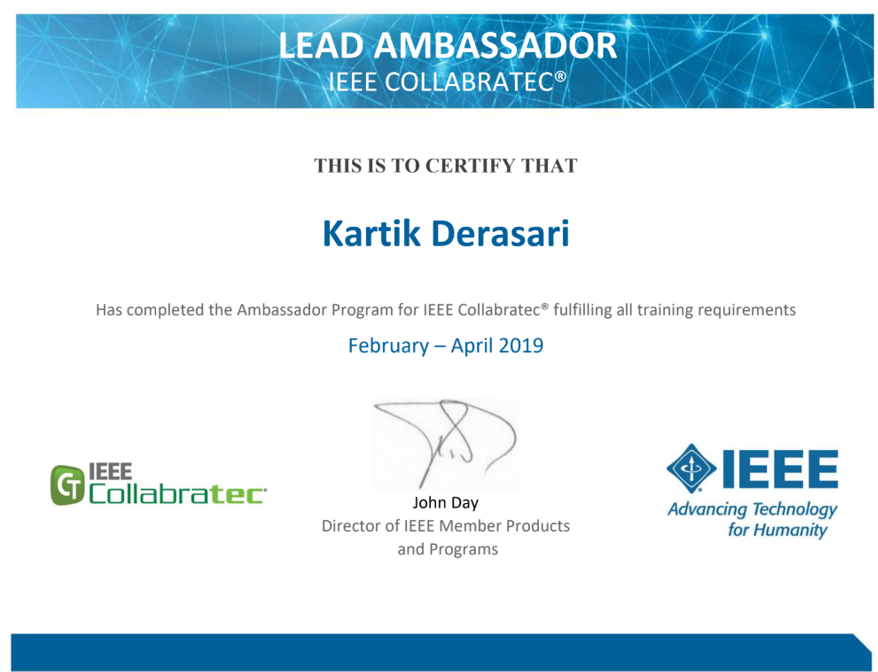Kartik Derasari being an active member of IEEE SOCET SB, participated in the IEEE Collabratec Ambassador Program which was a 3-month continued training program where the participants were trained through live Webinars by the IEEE Global Team - USA. He assiduously managed the different IEEE Global Communities having thousands of Members as a Moderator at IEEE Collabratec. By the time, He served as the IEEE Collabratec Ambassador while taking various initiatives he completed all the tasks and challenges. Looking at his continuous efforts and contribution, He has been promoted as the IEEE Collabratec Global Lead Ambassador, where only 20 participants were selected for this position from around the globe to serve the community having millions of members. Moreover, He was also awarded with a lot many of Goodies, and Amazon Gift Card for his dedicated contributions towards the community.
Google AI Explore ML – Star Facilitator & Top Contributor 2017-2018
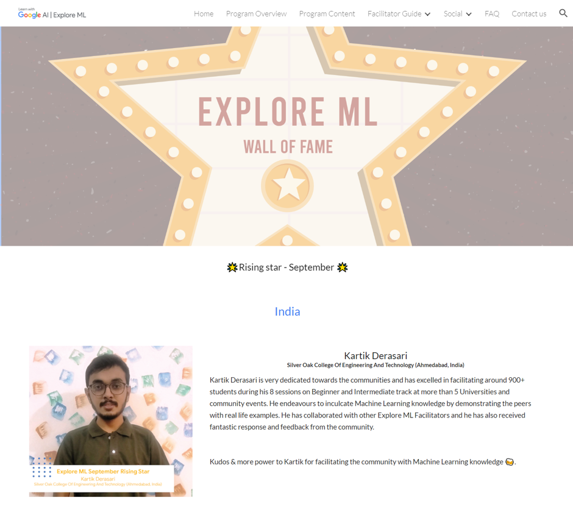Kartik Derasari has been chosen as the Explore ML Star Facilitator of the Month and also got featured in Google AI's Explore ML Wall of Fame. Kartik is very dedicated towards the communities and has excelled in facilitating around 900+ students during his 12 sessions on Beginner and Intermediate track at more than 5 Universities and community events. He endeavours to inculcate Machine Learning knowledge by demonstrating the peers with real life examples. He has collaborated with other Explore ML Facilitators and he has also received fantastic response and feedback from the community.
Google AI Explore Machine Learning Academy 2017-2018
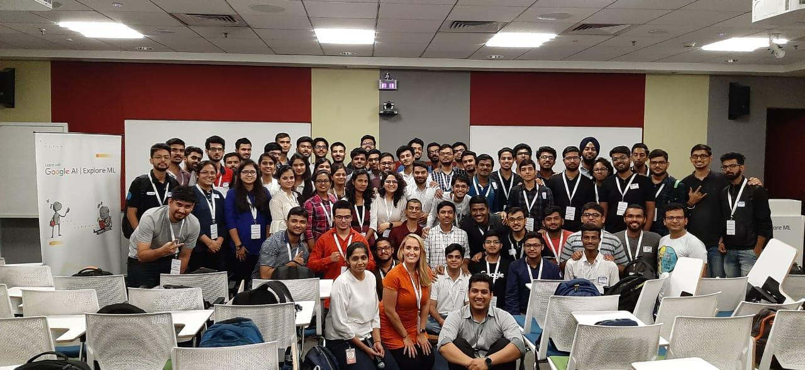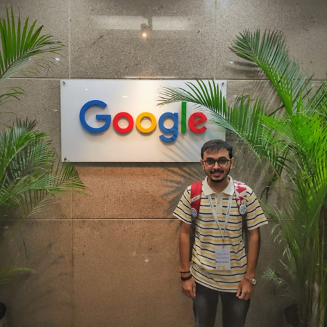
Kartik Derasari was selected in the Google AI’s Explore Machine Learning Academy - Bangalore where only 60 participants were selected from India - Asia. Explore Machine Learning (ML) is a Google-sponsored program for university students to get started with Machine Learning. The curriculum offers 3 tracks of machine learning content (Beginner, Intermediate, Advanced) and relies on university student facilitators to train other students on campus. Kartik was invited to the Explore ML Academy at Google Office, Bangalore to pursue Machine Learning Training from the Google AI Experts and Teaching Assistants and Subsequently, He’ll be serving as Google's Machine Learning Facilitator and will be taking Sessions, Talks and Workshops on Machine Learning & TensorFlow with Google Certifications.
Tata Consultancy Services EnginX Hackathon Top 150 – National 2017-2018
Tata Consultancy Services EnginX is a National Level Hackathon Kartik Derasari (Team Leader), Joy Patel, Dhaval Patel and Pakshal Shah participated. They came up with different Innovations and after getting Shortlisted in multiple rounds, they qualified till the Semi-Final Round. They achieved their position in Top 150 teams at National Level and in Top 2 teams from State Level. The Final Year students from the Team were also offered Direct Interview without any other Placement rounds due to their Innovative Projects and dedication towards the project. Kartik Derasari has also received a direct Internship opportunity to join in Tata Consultancy Services EIS Team.
HackNUthon – Nirma University Hackathon Winner 2017-2018
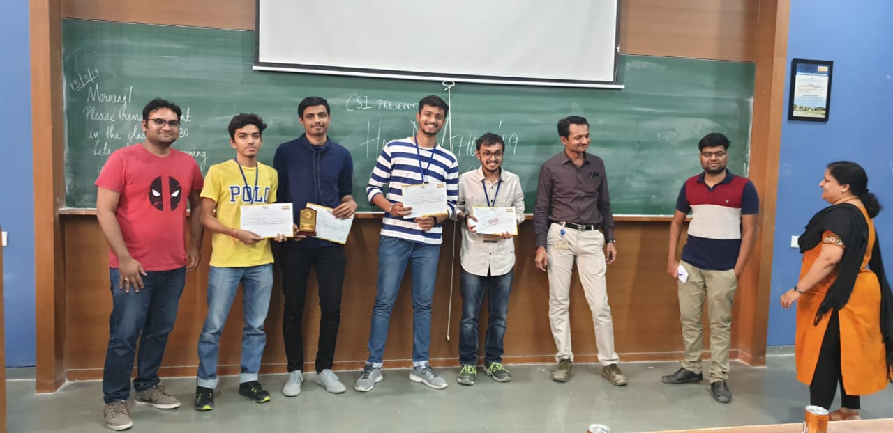HackNUthon ‘19 being a part of the Annual Fest NU’tech '19 was organised by Computer Society of India. Team Tech Squad having Kartik Derasari (Team Leader) Joy Patel, Dhaval Patel and Jyotish Joshi participated in this National Level Technical colloquium and they were also selected for the Semi-Final round which was held at the venue after the Online round. The Hackathon had honoured Guests and Jury Members who were highly skilled among all the domains and were an integral part of communities such as Pydata Ahmedabad, Google Developers Group, Facebook Developer Circle, GSoC and others. They were selected for the Grand Finale round and also secured the Winning position - First and were honoured with Certificates, Goodies, Awards, Cash Prize and much more.
Ingenious Hackathon – Ahmedabad University Hackathon Winner 2017-2018

Ingenious ‘19 Hackathon being a part of the Ingenium Annual Tech-Fest 2019 was organised by Ahmedabad University, was a very engrossing 36 hours competition where there were multiple Problem Domains such as Blockchain, Internet of Things, FinTech, Artificial Intelligence, Augmented Reality/Virtual Reality and composite Industry problems were given to the students. Students from the Computer Department had participated in the event and were also selected in the Semi-Final round which was held at the venue. The Team Tech Squad consisted of Kartik Derasari (Team Leader), Joy Patel, Dhaval Patel and Jigar Soni. The Hackathon had honoured Guests and Jury Members from VVDN Technologies, Plutomen Technologies and many more. Around 35 teams (each having 3-4 members) were selected for this Semi-Final round after competing with many other teams during Online round. Tech Squad won the Ingenious ’19 Hackathon and stood as the First Runner Up (IoT) and were awarded with Certificates, Goodies, Internships and much more.
Google Developers Machine Learning Boot Camp 2017-2018
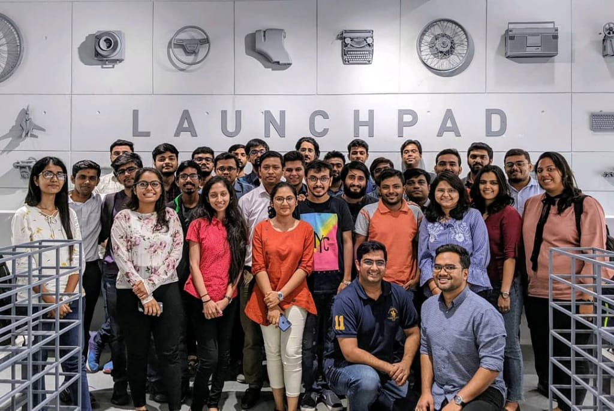Kartik Derasari was selected to be a part of a Machine Learning Boot Camp which was hosted by Google Developers and was organised by the Centre for Innovation Incubation and Entrepreneurship (CIIE), Indian Institute of Management Ahmedabad (IIM Ahmedabad) having only 30 participants. This helped him to boost up his skills with the scalability and by the touch of Google Developer’s Team knowledge.
Google Firebase Roadshow 2017-2018
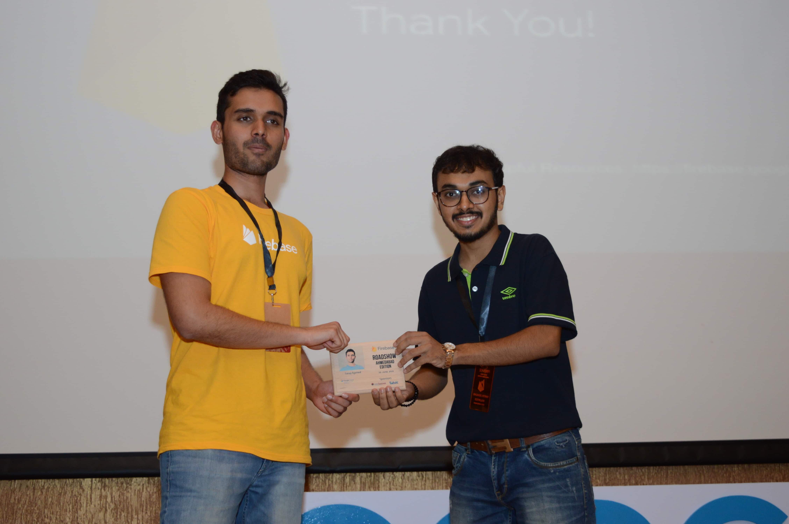Kartik Derasari has always been helping the communities in every way possible and he is a part of Google Developers Group Cloud Ahmedabad community having more than 2400 members in it. Google Firebase Team visited India after 2 years and he was in the Event Organising team and volunteered in the Firebase Roadshow Ahmedabad Edition - International Conference where series of talks, workshops were organized on June 30, 2019, having 5 Expert Sessions with live coding, Workshop by Google Developer Experts and a really cool Music session.
Being a vital part of the GDG Cloud Ahmedabad Team and Organising Committee, Kartik was offered the privilege to felicitate Tanay Agarwal (Tech Lead of Google Firebase Messaging, Software Engineer at Google) with a token of gratitude.Oracle Ground breakers Yatra 2017-2018
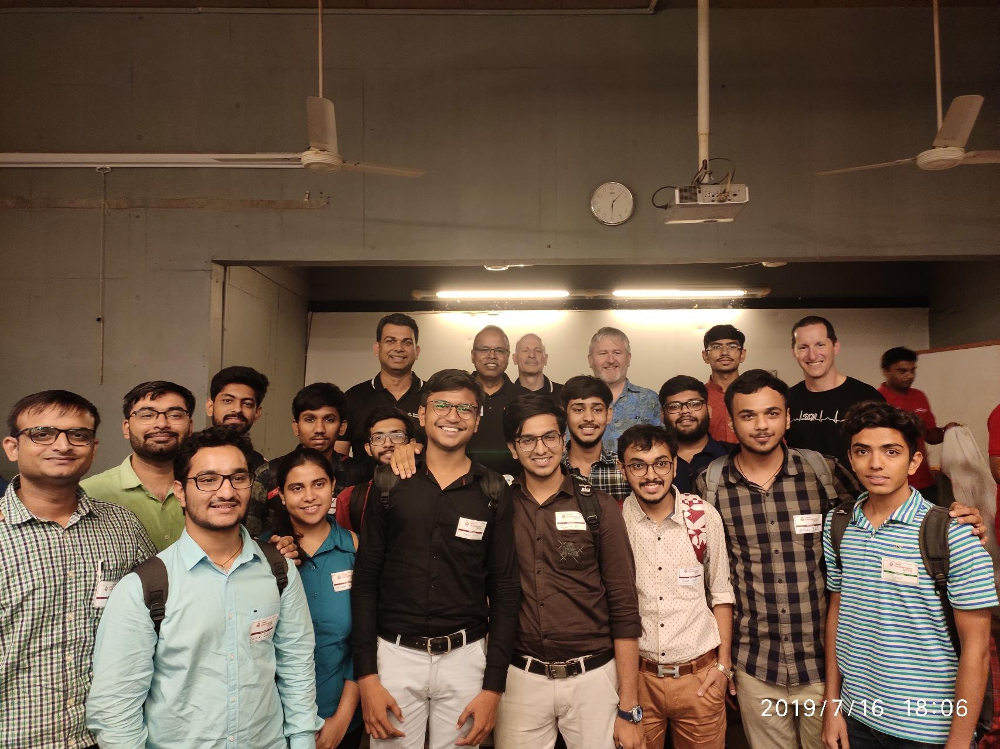Oracle Academy has created a great impact over the students and Kartik Derasari, being one of the Coordinator of the Oracle Academy he represented the Silver Oak Oracle Academy at the Oracle Ground Breakers Yatra which was organised by the All India Oracle User Group at Ahmedabad Management Association Ahmedabad. He got the opportunity to interact and network with All India Oracle User Group Founder, Global Community Manager, and other Oracle Employees, and Trainers from different countries.
Talk on Google Cloud 2017-2018
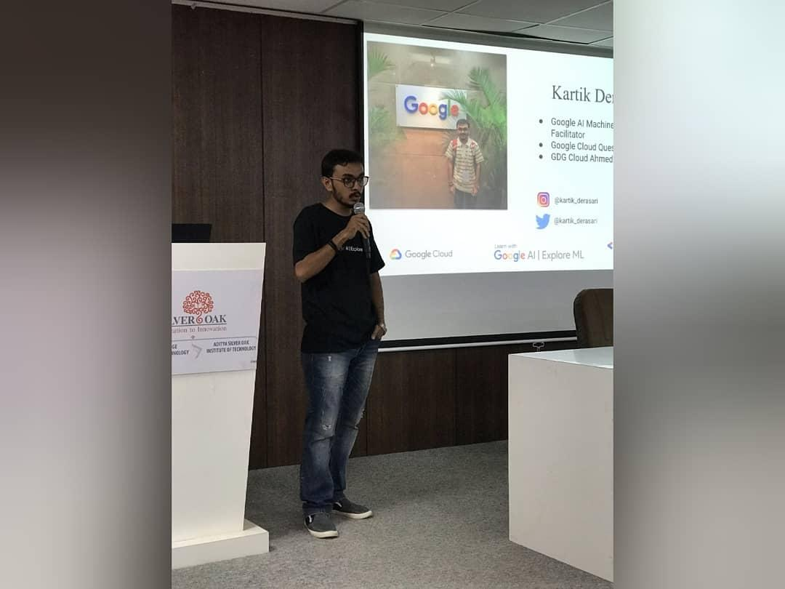As Silver Oak College of Engineering and Technology has collaborated with Google Cloud for the Career Readiness Program for Google Associate Cloud Engineer Track, Kartik Derasari being the part of our college and Google Developer Groups Cloud Ahmedabad delivered a session on Google Cloud and its fundamentals. More than 180 students got the opportunity to learn about the Career Readiness Program and the Google Cloud Basics.
DevFest Ahmedabad 2017-2018
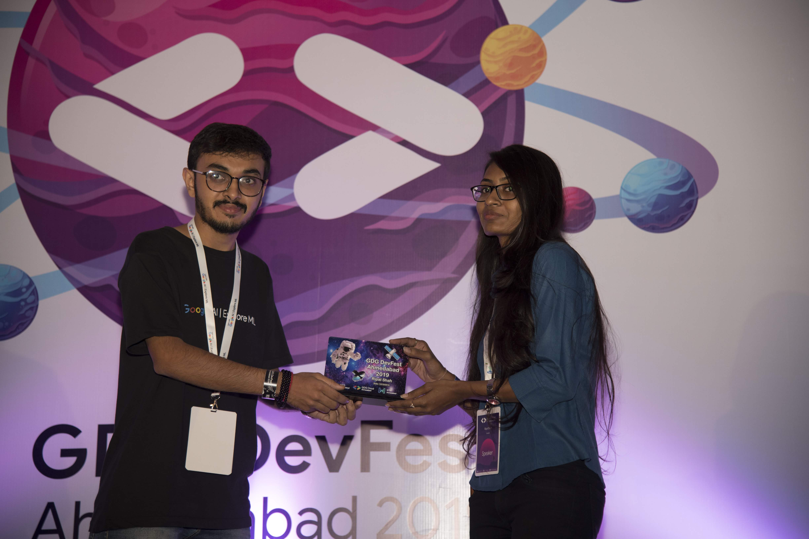Google Developers Group Ahmedabad (GDG Ahmedabad) is for the developers, interested in Google's developer technology from Android to App Engine, Google Chrome platforms to product APIs like the Maps, YouTube, Flutter and Tensorflow, all that Google you can think of. GDG Ahmedabad organised its annual gathering of technology enthusiasts working on Android, Web and Cloud technologies for a day full of sessions, workshops, showcases, networking with other like-minded industry colleagues and ample fun. Over 450+ engineers, managers, and entrepreneurs came to DevFest to learn about Android, Web and Cloud technologies, and to experience the phenomenal atmosphere. Kartik Derasari being an active member of GDG Ahmedabad had a chance to be in the Organising team and volunteer for this International Tech Conference. He also represented Google AI’s Explore ML Program at DevFest Ahmedabad.
Google Cloud Cloud Community Day 2017-2018
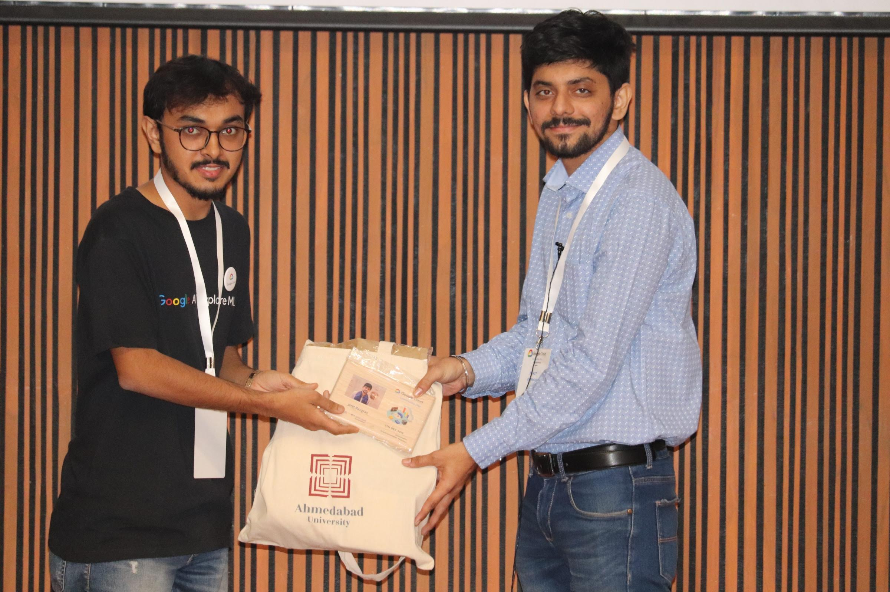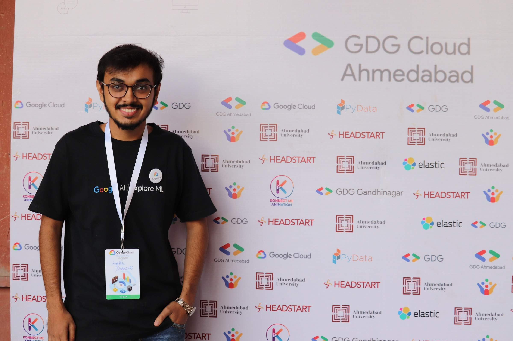Google Cloud Community Day is an International Conference on Google Cloud which was hosted by Google Developers Group Cloud Ahmedabad and Google Developers. International Experts, Google Developer Experts, Domain Experts, Entrepreneurs graced this event. Kartik Derasari with his team organised this International Conference having more than 350 engineers, managers, and entrepreneurs. He also got the opportunity to felicitate the Domain Experts at the event.
Microsoft Student Partner & Summit 2017-2018
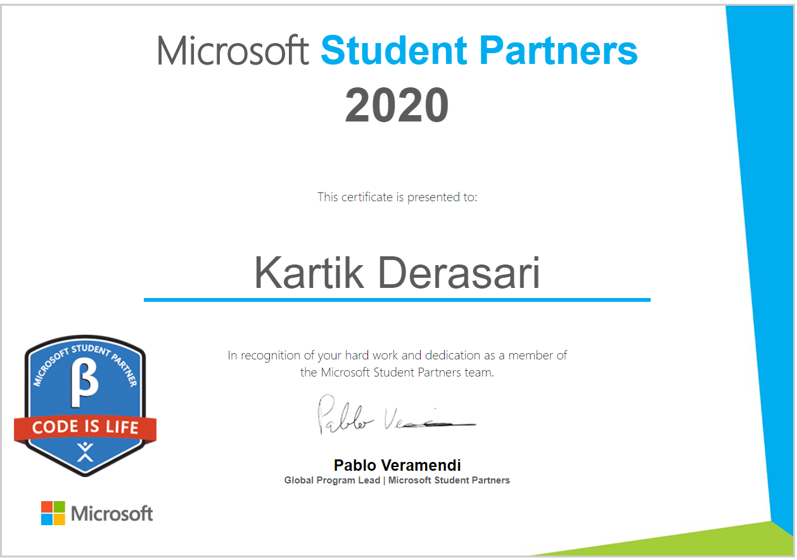Student Partners are a global group of on-campus ambassadors who are eager to help fellow students, lead in their local tech community, and develop technical and career skills for the future. Kartik Derasari was selected in Microsoft Student Partner Program and he has made number of contributions to this Community Program. He was also invited to the Annual Microsoft Student Partner Summit which was held in Delhi and Microsoft Gurgaon.
AWS Community Day 2017-2018
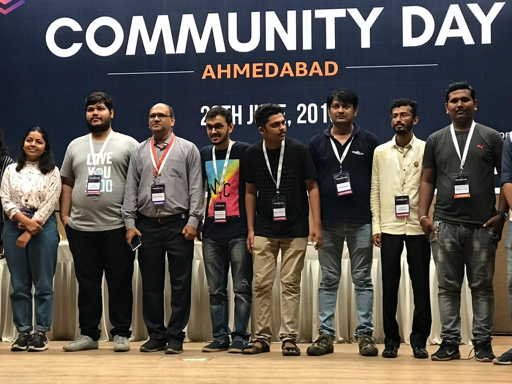AWS Community Day - Ahmedabad, is community event supported by AWS and organized by AWS Community Ahmedabad. The goal is to leverage cloud computing technology momentum and update yourself for what is happening in Cloud computing domain. Kartik Derasari got the priviledge to participate in the Organising Team and volunteer for this International Tech Conference to make it a grand success. International Experts, Amazon Developer Relations Team, Domain Experts, Entrepreneurs graced this event
Skills
Machine Learning
Pandas, Numpy, Matplotlib,
Sci-kit learn, TensorFlowCloud
Google Cloud Platform,
Amazon Web ServicesSoftware Development
C, C++,
Java, PythonFRONTEND DEVELOPMENT
HTML, CSS, JS
BACKEND DEVELOPMENT
Python, Flask
Voice User Interface
Amazon Alexa, Dialogflow
Contact